En el patio
Sin radio. Cajón y estado a un toque.
MapGestión · Para arrendadoras
Hoy: el mapa de tu patio en vivo, cuadre y flota, sin WhatsApp ni radio. En desarrollo: clientes frecuentes y verificación 110 en una red segura entre arrendadoras.
Chat y radio, con respuestas que se contradicen
Radio · Canal 3Ejemplo ilustrativo
“Base, ¿la I166 está en taller?”
“Creo que sí… o ya salió. Cambio.”
“¿Cuál patio? Repite. Cambio.”
El Excel eterno… lleno de dudas
| Fila | A | B | C | D | E |
|---|---|---|---|---|---|
| 1 | D5256 | Aveo | lleno?? | patio? | pregunta Jose |
| 2 | D5129 | Aveo | listo? | patio B | ok x |
| 3 | F1161 | Jetta | lavando | lavado? | ? |
| 4 | I166 | Tank 300 | taller?? | ? | rayón |
| 5 | M159 | Suburban | en patio | check in? | |
| 6 | Q234 | GN8 | no sé | - | revisar |
Un solo estado, sin plaza ni ubicación
Sistema viejo Ejemplo ilustrativo
| Fecha | Estatus |
|---|---|
| 17/06/2021 17:40 | EN TALLER |
| 03/11/2019 09:14 | DISPONIBLE |
| --/--/---- --:-- | DISPONIBLE |
Estado, ubicación, cajón y gasolina, por separado
MapGestión Captura real
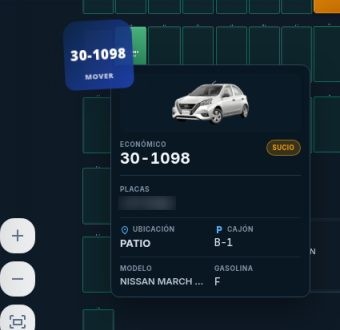
D5256: gasolina, km, estado y ubicación — al instante
| MVA | Categoría | Modelo | Placas | Estado | Ubicación | Notas |
|---|
Operación del patio
Cada unidad en su cajón, con su estado por color.
Resumen en 3 segundos
Un mapa, todas tus plazas
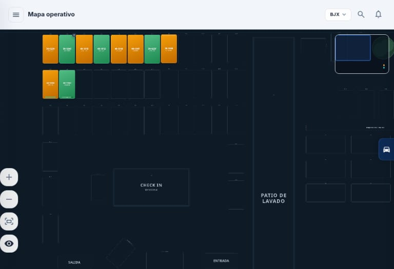
Animación sobre capturas reales de la app
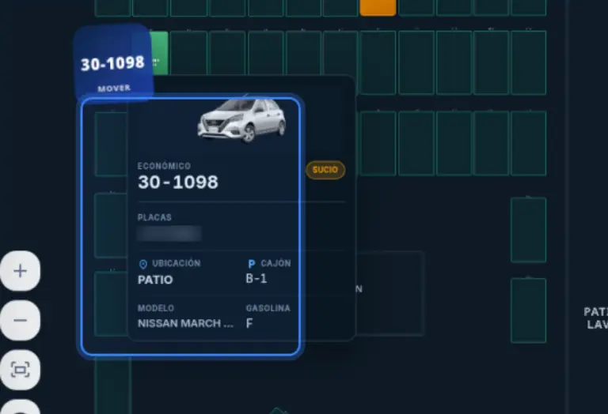
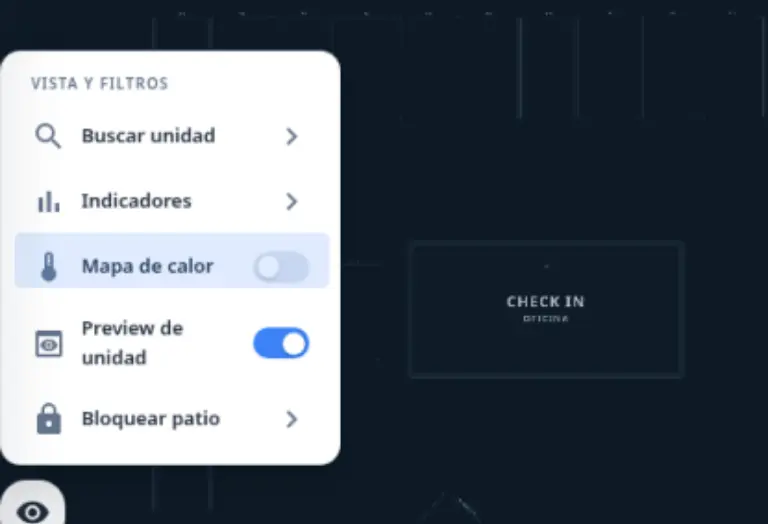
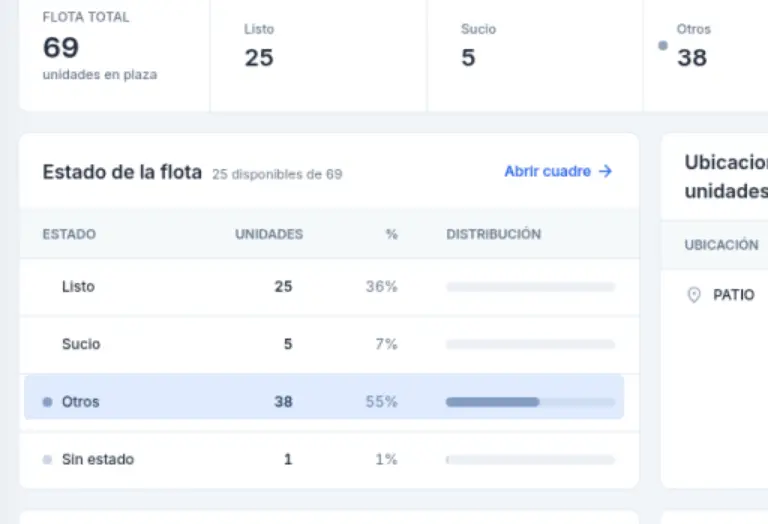
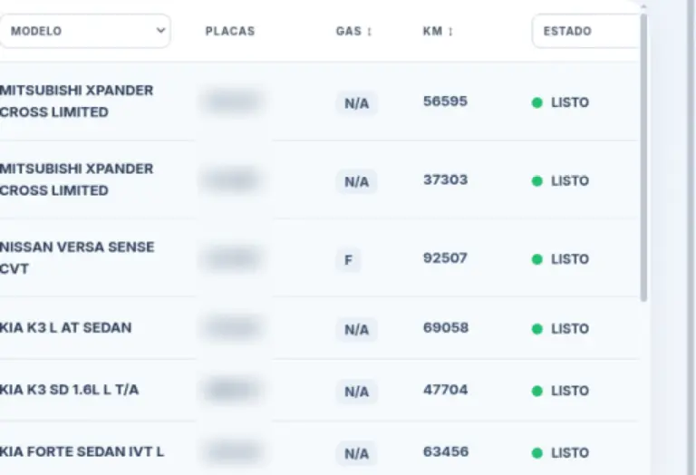
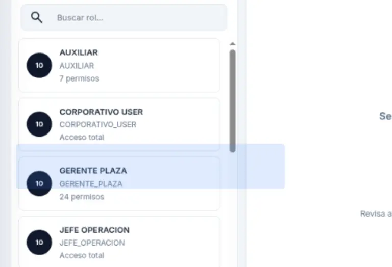
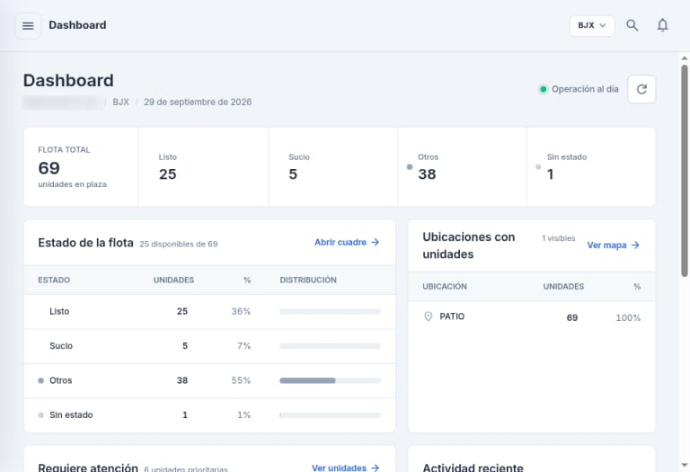
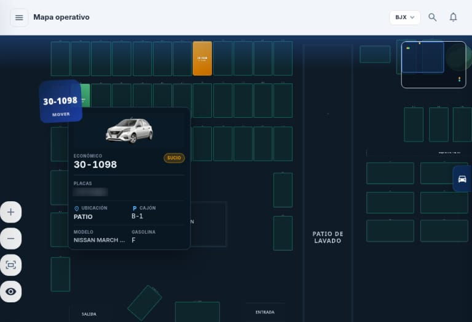
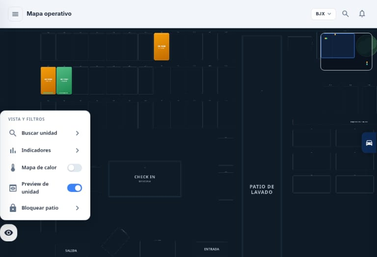
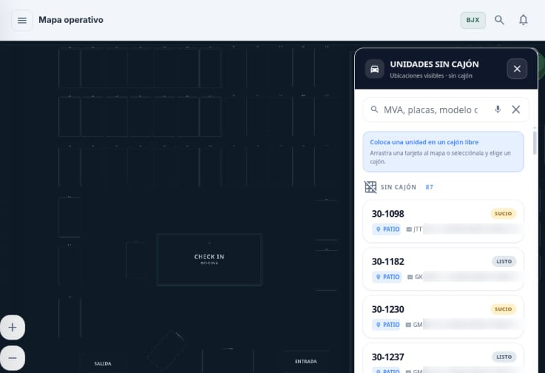
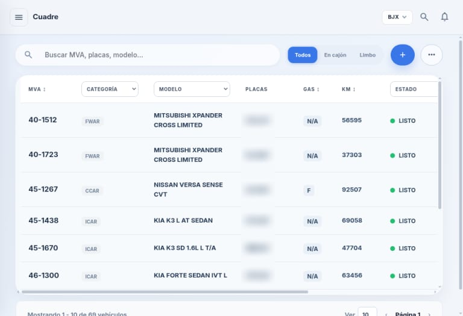
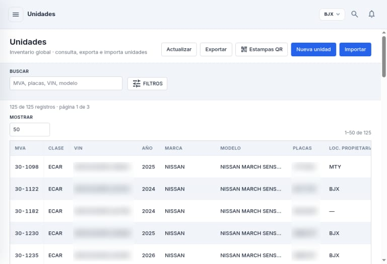
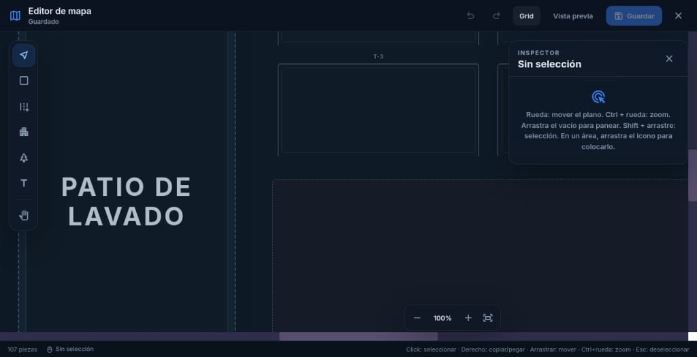
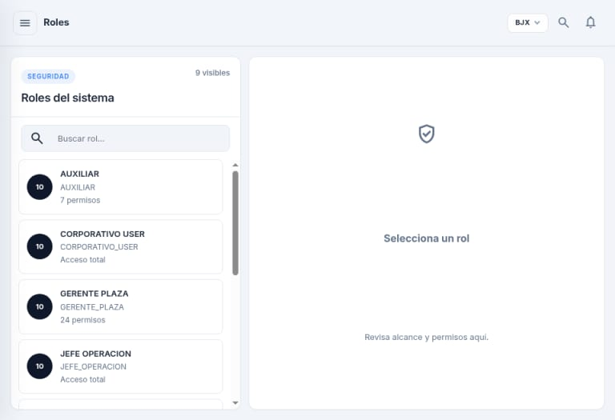
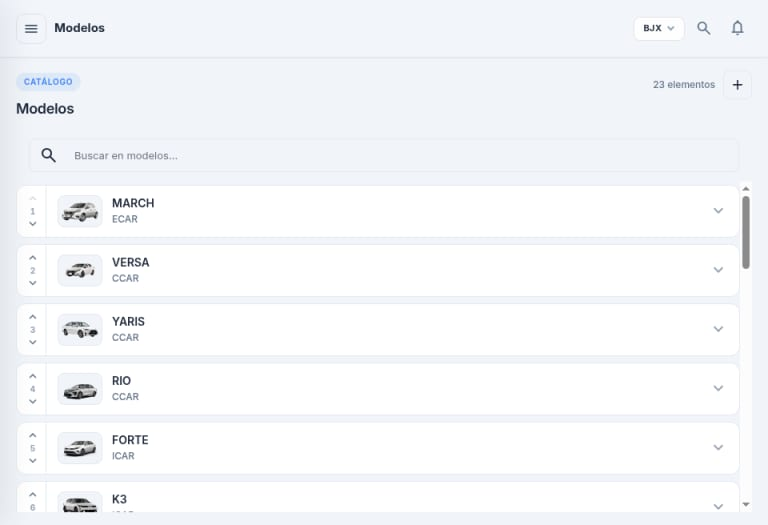
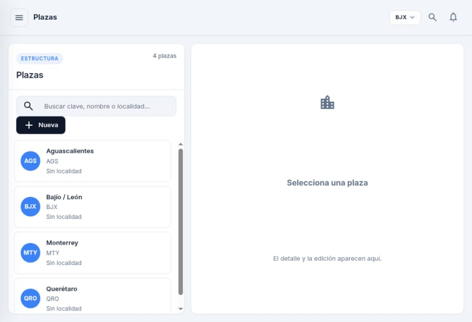
En la nube: desde el patio, tu casa o de viaje.
Sin radio. Cajón y estado a un toque.

Misma cuenta, mismo mapa.

Varios patios, una cuenta.
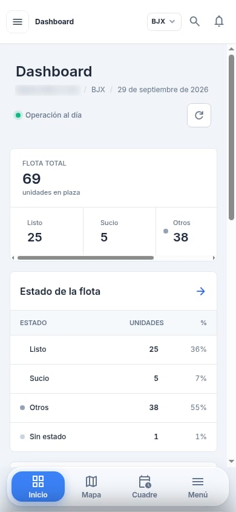
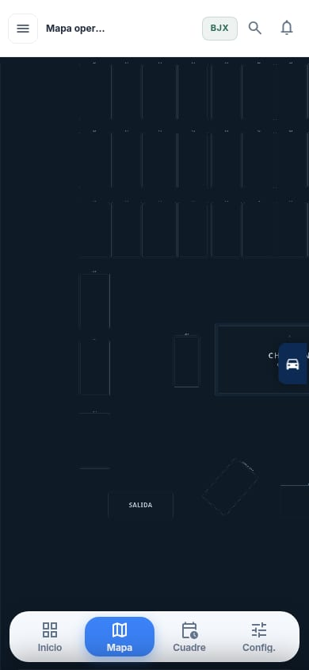
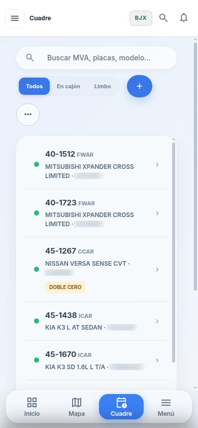
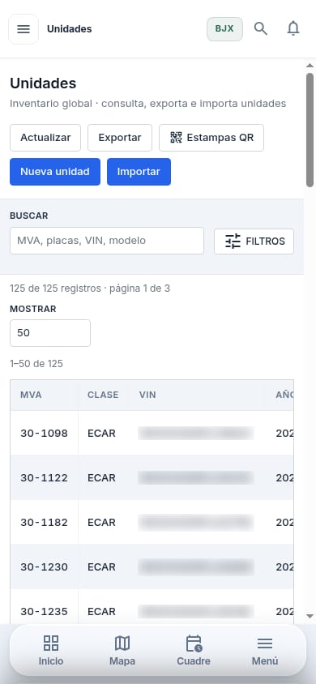
Asistente con IA Próximamente
Usos rápidos justo donde ya estás. La IA propone; tu equipo decide.
Resumen en 3 segundos Próximamente
Tú decides, la IA propone
En el mapa
“¿Dónde está la M159?”
Asistente del mapa
La M159 está en el cajón A-2, en preparación.
En el mapa
“Muévela al cajón B-4.”
Asistente del mapa
Listo: M159 en B-4.
Queda en el historial a tu nombre.
En el cuadre
“¿Cuántas hay listas para renta?”
Asistente del mapa
En tu plaza hay 12 listas, 3 en preparación y 2 en taller.
También te lo dice en voz alta.
En el mostrador En desarrollo
“Verifica a este cliente.”
Agente de verificación
Si una fuente no responde: “no se pudo verificar”.
En el mostrador En desarrollo
“Prepara el expediente.”
Agente de verificación
Borrador listo: contrato, evidencias y resumen.
Borrador Pendiente de revisión
La IA no activa ni borra un 110. Solo lo prepara.
Clientes y verificación 110 En desarrollo
Escaneas la identificación y ves qué coincidió.
Resumen en 3 segundos En desarrollo
Un vistazo antes de las llaves
En desarrolloPantalla ilustrativa
ExactoCoincideNo se pudo verificar
Nueva rentaSolicitar revisión
Identificación
Motivo: alta de renta · Contrato RA-00000
Verificación en curso
Sin coincidencias
Nueva renta
Posible coincidencia · Requiere revisión
Solicitar revisión
Expediente verificado
Ver resumenSolicitar revisión
MapGestión informa la coincidencia. La decisión de rentar es de tu empresa.
Pantalla ilustrativa: nombres, datos y folios ficticios.
La IA propone. La decisión es de tu empresa.
Cómo funciona, paso a pasoRed entre arrendadoras En desarrollo
Cada arrendadora conserva lo suyo. Solo se pregunta por una identidad.
Resumen en 3 segundos En desarrollo
Una red, no una lista
Se activará tras la revisión jurídica y los contratos entre arrendadoras.
Seguridad y privacidad
Resumen en 3 segundos
Tus datos, con candado
Implementación
Patio, flota y procesos.
Digitalizamos tu patio y cargamos tus unidades.
Equipo capacitado, celular en mano.
Seguimos contigo.
Sí. Vive en la nube: entras desde el patio, en casa o de viaje.
Sí. Abres el mapa y ves cajón, estado, gasolina y datos de la unidad, sin preguntar por chat.
El dashboard de tu plaza: flota total, estados y unidades que requieren atención.
Ver el dashboard y el cuadreSí. Una cuenta cubre varias plazas y sub-plazas.
Ver cómo funcionan las plazasSí. Importas desde Excel o CSV y exportas cuando quieras.
Ver unidades y búsquedaNo. Es un mapa virtual de tu patio, no coordenadas en ruta.
Solo entra quien invitas, y cada quien hace lo que permite su rol.
Ver roles y permisosEl asistente del mapa está por activarse (Próximamente). Los usos en el mostrador están en desarrollo.
Ver qué hará la IANo. Busca, resume y prepara borradores. La decisión es de tu empresa.
Un caso formal por un incidente grave, con evidencia verificable y revisión antes de activarse.
Explicado paso a pasoNo. Se verifica una identidad concreta, con un motivo, y la respuesta es limitada. La decisión es de tu equipo.
Cómo funciona la redPuede pedir corregirlo. Si fue un error, deja de aparecer de inmediato.
Qué pasa si el dato está malSolo lo mínimo. Nunca la INE completa, domicilio, teléfono, fotos ni contrato.
Qué se guarda y qué se comparteEstá en desarrollo. La red se activará tras la revisión jurídica y los contratos. Pídela en tu demo.
Cuéntanos cuántas unidades y plazas manejas y qué te interesa. Te contactamos para una demo.
¿Prefieres WhatsApp? Escríbenos aquí.